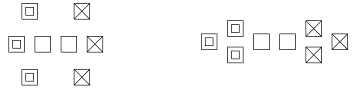
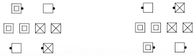
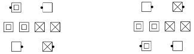
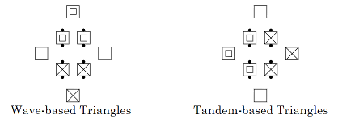
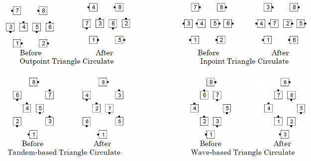

A triangle is a formation of 3 dancers. One is the apex and the other two form the base. If the base dancers are aligned in a general column, the triangle is called a tandem-based triangle. If the base dancers are aligned in a general line, the triangle is called a wave-based triangle. In some triangles all 3 dancers may not be immediately adjacent to each other. Triangles are found as parts of a galaxy, hourglass, twin diamonds and various other formations.
Inpoint/Inside/Outpoint/Outside Triangles. Various formations, including Twin Diamonds and Point-to-Point Diamonds, contain Triangles.
Inside Triangle: The Center 6 form the Triangles.
Outside Triangle: The Outside 6 form the Triangles.

The footprints of twin diamonds, with the outside 4 in tandem, contain additional Triangles. Each of these triangles has one point as the apex and two of the center 4 as the base.
Inpoint Triangle:Each point facing in is an apex.

Outpoint Triangle: Each point facing out is an apex.

Tandem-based/Wave-based Triangles
Various formations, especially a Galaxy, contain triangles that may be
identified by the formation of their “base”. A wave-based triangle has
the dancers in the base usually in a mini-wave (also possible: a
couple). A tandem-based triangle has the dancers in the base usually in
a tandem (also possible: facing or back-to-back dancers).

Examples of various Triangle Circulates:
